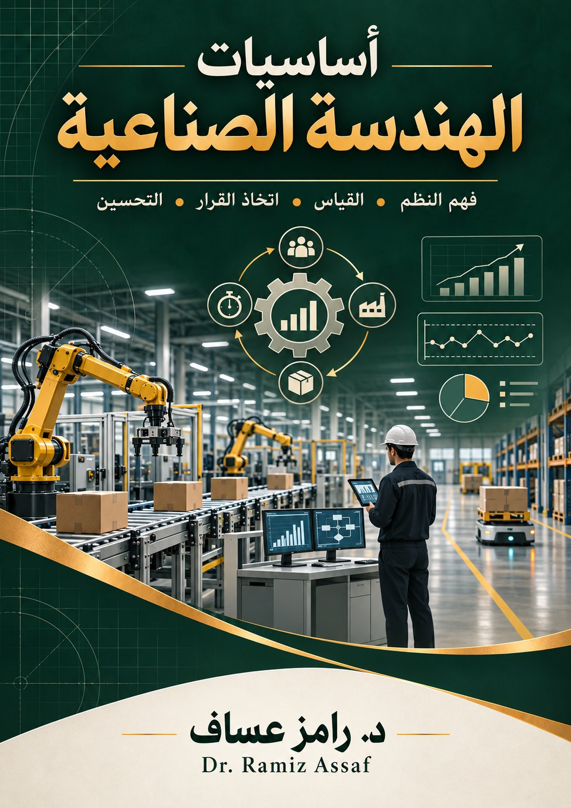

كتاب جامعي باللغة العربية · 2026
من موقف يومي في مصنع أو عيادة أو مستودع، إلى سؤال يمكن قياسه، إلى قرار يمكن الدفاع عنه.

يفتح هذا الكتاب باب الهندسة الصناعية من موقف يومي إلى سؤال يمكن قياسه. يجمع السرد التعليمي مع أمثلة حسابية ومسائل للتدريب، ويربط فهم النظام بالقياس والقرار والتحسين. تغطي الفصول العوامل البشرية والقياس والعمليات والجودة والمخزون وبحوث العمليات والاقتصاد الهندسي والاستدامة واستمرارية العمل.